CODING AGENTS AS PIXEL WORLD MODELS
traex/GPT-6.1-Sol · 0036
点击播放 · 原生 RGB 像素
此结果可播放，但该运行尚未通过最终提交审核。页面展示不代表评测通过。
逐轮保存的候选
回放视频、检查图与代码变化。
每份候选均可单独播放。实际图片检查记录在下方工具轨迹中。
候选 01播放与检查图
点击播放 · 原生 RGB 像素

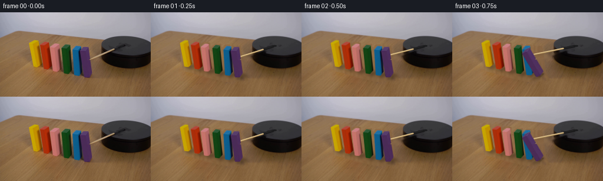
展开代码变化
--- 上一保存版本
+++ 本次保存版本
@@ -0,0 +1,176 @@
+from pathlib import Path
+import math
+import cv2
+import numpy as np
+from PIL import Image, ImageDraw
+import artifact_io
+
+ROOT=Path(__file__).resolve().parent
+S=4
+W,H=256,144
+original=np.array(Image.open(ROOT/'first_frame.png').convert('RGB'))
+# Each block's local axes are measured in the initial locked camera image.
+# bottom front left, width, depth, height
+blocks=[
+ ((56.5,92.5),(7.7,.8),(5.8,-5.4),(-7.0,-40.1)),
+ ((74.3,96.8),(8.0,.6),(5.8,-5.6),(-6.7,-41.8)),
+ ((90.4,100.4),(8.0,.6),(5.0,-5.4),(-5.3,-41.7)),
+ ((109.0,104.4),(7.8,.9),(5.0,-6.0),(-4.5,-42.8)),
+ ((125.9,107.3),(8.2,.8),(5.2,-7.0),(-2.7,-43.1)),
+ ((142.5,111.0),(8.2,-.3),(5.5,-6.9),(-6.2,-45.1)),
+]
+blocks=[tuple(np.array(v,float) for v in b) for b in blocks]
+
+def poly_mask(points,size=(W*S,H*S)):
+ a=np.zeros((size[1],size[0]),np.uint8)
+ cv2.fillPoly(a,[np.rint(np.array(points)*S).astype(np.int32)],255,lineType=cv2.LINE_AA)
+ return a
+
+# Recover the tabletop under the six initially upright blocks from its visible wood.
+mask=np.zeros((H,W),np.uint8)
+for p,u,v,z in blocks:
+ q=np.array([p,p+u,p+u+v,p+u+v+z,p+u+z,p+z,p+v+z])
+ cv2.fillConvexPoly(mask,np.rint(cv2.convexHull(q.astype(np.float32))).astype(np.int32),255)
+mask=cv2.dilate(mask,np.ones((5,5),np.uint8))
+# Cover the cast shadows along the base of the row.
+cv2.fillPoly(mask,[np.array([(53,89),(67,86),(159,103),(165,116),(126,118),(54,99)],np.int32)],255)
+low=cv2.inpaint(original,mask,5,cv2.INPAINT_TELEA)
+yy,xx=np.mgrid[:H,:W].astype(np.float32)
+# A real portion of the unoccluded wood supplies faint diagonal grain inside the holes.
+sx=0.48*xx-0.32*yy+49
+sy=0.40*yy+96
+wood=cv2.remap(original,sx,sy,cv2.INTER_CUBIC,borderMode=cv2.BORDER_REFLECT_101)
+# Retain broad local illumination while using texture from the table itself.
+wood_l=cv2.GaussianBlur(wood.astype(np.float32),(0,0),3)
+low_l=cv2.GaussianBlur(low.astype(np.float32),(0,0),7)
+fill=np.clip(.47*wood.astype(float)+.53*(wood.astype(float)-wood_l+low_l),0,255)
+# Blend at the boundary, but fully remove original colored pixels.
+alpha=cv2.GaussianBlur(mask.astype(float)/255,(0,0),.6)
+alpha=np.maximum(alpha,mask.astype(float)/255)
+base=original.astype(float)*(1-alpha[:,:,None])+fill*alpha[:,:,None]
+base=np.uint8(np.clip(base,0,255))
+# Erase the original moving spindle and stick on the platform and on the tabletop.
+armmask=np.zeros((H,W),np.uint8)
+cv2.line(armmask,(151,81),(196,63),255,4,cv2.LINE_AA)
+cv2.line(armmask,(194,65),(211,57),255,6,cv2.LINE_AA)
+cv2.line(armmask,(208,57),(215,55),255,5,cv2.LINE_AA)
+base=cv2.inpaint(base,armmask,3,cv2.INPAINT_TELEA)
+# Composite on the original camera image at fourfold subpixel precision.
+base_hi=cv2.resize(base,(W*S,H*S),interpolation=cv2.INTER_CUBIC).astype(np.float32)
+orig_hi=cv2.resize(original,(W*S,H*S),interpolation=cv2.INTER_CUBIC).astype(np.float32)
+
+faces=[]
+for p,u,v,z in blocks:
+ fs={
+ 'front':np.array([p,p+u,p+u+z,p+z]),
+ 'right':np.array([p+u,p+u+v,p+u+v+z,p+u+z]),
+ 'top':np.array([p+z,p+u+z,p+u+v+z,p+v+z]),
+ 'bottom':np.array([p,p+u,p+u+v,p+v]),
+ }
+ means={}
+ for k in ('front','right','top'):
+ m=poly_mask(fs[k]);m=cv2.erode(m,np.ones((4,4),np.uint8))
+ means[k]=np.mean(orig_hi[m>128],axis=0)
+ fs['means']=means
+ faces.append(fs)
+
+def draw_face(canvas,src,dst,shift=None,flat=None):
+ dst=np.array(dst,np.float32)
+ # Reject hidden planar faces.
+ area=np.cross(dst[1]-dst[0],dst[2]-dst[1])
+ if area >= -0.12:return
+ matrix=cv2.getPerspectiveTransform(np.array(src,np.float32)*S,dst*S)
+ texture=cv2.warpPerspective(orig_hi,matrix,(W*S,H*S),flags=cv2.INTER_LINEAR,borderMode=cv2.BORDER_REPLICATE)
+ if flat is not None:
+ texture[:]=flat
+ elif shift is not None:
+ texture+=shift
+ alpha=poly_mask(dst).astype(np.float32)/255
+ # Slightly soften painted wooden edges to match the input's photographic focus.
+ alpha=cv2.GaussianBlur(alpha,(0,0),.75)
+ canvas[:]=canvas*(1-alpha[:,:,None])+np.clip(texture,0,255)*alpha[:,:,None]
+
+
+def angle_at(t,i):
+ # A motor presses the violet end block, initiating the right-to-left cascade.
+ start=.43+(5-i)*.17
+ settled=[math.pi/2,1.397,1.323,1.265,1.225,1.195][i]
+ q=(t-start)/.67
+ if q<=0:return 0.
+ if q>=1.20:return settled
+ if q<1:
+ # Gravitational acceleration grows during the first part of the fall.
+ a=settled*(q*q*(2.0-q))
+ return a
+ # Small collision recoil, then a stable overlapping pile.
+ return settled+.025*math.sin((q-1)*math.pi/0.2)*math.exp(-15*(q-1))
+
+
+def arm(canvas,t):
+ center=np.array([210.5,57.3])
+ theta=math.radians(139+22*t)
+ direction=np.array([math.cos(theta),.445*math.sin(theta)])
+ tip=center+79*direction
+ stickstart=center+24*direction
+ # Small soft shadow on the table and black motor housing.
+ shade=np.zeros((H*S,W*S),np.uint8)
+ cv2.line(shade,tuple(np.rint((stickstart+[1,2])*S).astype(int)),tuple(np.rint((tip+[1,2])*S).astype(int)),255,2*S,cv2.LINE_AA)
+ shade=cv2.GaussianBlur(shade,(0,0),1.8*S).astype(float)/255*.12
+ canvas*=1-shade[:,:,None]
+ def line(a,b,color,width):
+ cv2.line(canvas,tuple(np.rint(a*S).astype(int)),tuple(np.rint(b*S).astype(int)),color,max(1,round(width*S)),cv2.LINE_AA)
+ # The black clamp revolves with the wooden arm.
+ line(center+3*direction,center+24*direction,(26,26,27),3.8)
+ line(center+5*direction+[-.1,-.65],center+22*direction+[-.1,-.65],(37,37,38),1.0)
+ cv2.ellipse(canvas,tuple(np.rint(center*S).astype(int)),(int(3.4*S),int(1.65*S)),0,0,360,(29,29,30),-1,cv2.LINE_AA)
+ line(stickstart,tip,(158,124,75),2.05)
+ line(stickstart+[-.15,-.38],tip+[-.15,-.38],(213,183,126),1.30)
+ line(stickstart+[0,-.68],tip+[0,-.68],(222,196,146),.48)
+
+
+def render(t):
+ canvas=base_hi.copy()
+ angles=[angle_at(t,i) for i in range(6)]
+ shadow=np.zeros((H*S,W*S),np.float32)
+ for i,(p,u,v,z) in enumerate(blocks):
+ a=angles[i];r=np.linalg.norm(z)/np.linalg.norm(u)
+ # Project the light ray to the wooden table.
+ zshadow=np.array([10.0,5.0])/r
+ us=u*math.cos(a)+zshadow*math.sin(a)
+ zs=-u*r*math.sin(a)+zshadow*r*math.cos(a)
+ pts=np.array([p,p+us,p+us+v,p+us+v+zs,p+v+zs,p+zs])
+ m=poly_mask(cv2.convexHull(pts.astype(np.float32)).reshape(-1,2)).astype(np.float32)/255
+ m=cv2.GaussianBlur(m,(0,0),(1.45+1.2*math.cos(a))*S)
+ shadow=np.maximum(shadow,m*.31)
+ # Tight contact shade keeps each fallen block visibly on the surface.
+ ground=np.array([p,p+us,p+us+v,p+v])
+ m2=poly_mask(ground).astype(float)/255
+ shadow=np.maximum(shadow,cv2.GaussianBlur(m2,(0,0),.8*S)*.34)
+ canvas*=1-shadow[:,:,None]
+ arm(canvas,t)
+ for i,(p,u,v,z) in enumerate(blocks):
+ a=angles[i];r=np.linalg.norm(z)/np.linalg.norm(u)
+ zz=z/r
+ ur=u*math.cos(a)+zz*math.sin(a)
+ zr=-u*r*math.sin(a)+z*math.cos(a)
+ dst={
+ 'front':[p,p+ur,p+ur+zr,p+zr],
+ 'right':[p+ur,p+ur+v,p+ur+v+zr,p+ur+zr],
+ 'top':[p+zr,p+ur+zr,p+ur+v+zr,p+v+zr],
+ 'bottom':[p+v,p+ur+v,p+ur,p],
+ }
+ f=faces[i]
+ shift=(f['means']['top']-f['means']['right'])*math.sin(a)*.86
+ draw_face(canvas,f['top'],dst['top'],shift=-math.sin(a)*7)
+ draw_face(canvas,f['bottom'],dst['bottom'],flat=f['means']['front']*.7)
+ draw_face(canvas,f['right'],dst['right'],shift=shift)
+ draw_face(canvas,f['front'],dst['front'],shift=math.sin(a)*np.array([2,1,0]))
+ return cv2.resize(np.uint8(np.clip(canvas,0,255)),(W,H),interpolation=cv2.INTER_AREA)
+
+if __name__=='__main__':
+ frames=[original]
+ for k in range(1,20):frames.append(render(k/4))
+ frames=np.stack(frames).astype(np.uint8)
+ artifact_io.save(frames,ROOT)
+ Image.fromarray(base).save(ROOT/'.tmp/background.png')
+ Image.fromarray(render(0)).save(ROOT/'.tmp/rebuild.png')
候选 02播放与检查图
点击播放 · 原生 RGB 像素
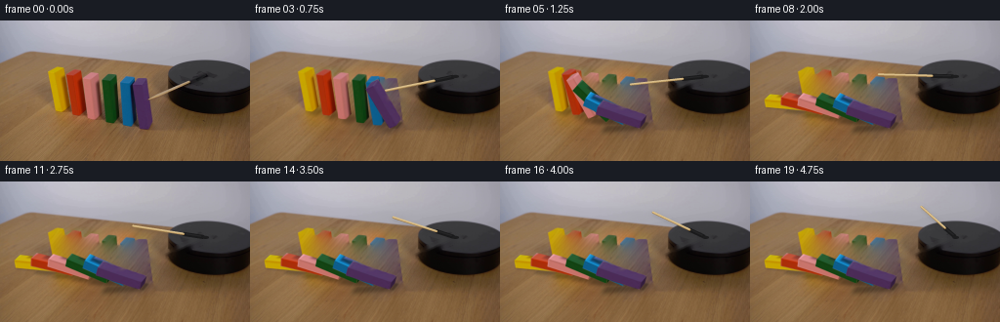
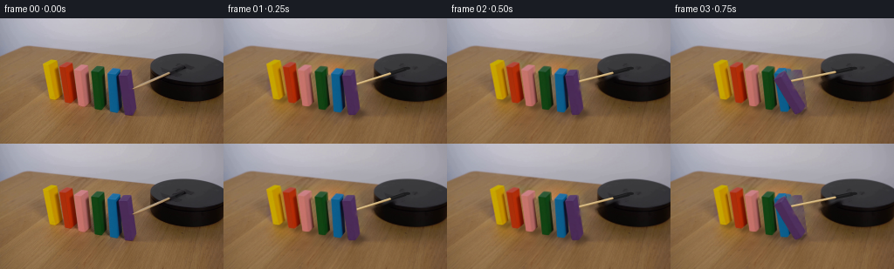
展开代码变化
--- 上一保存版本
+++ 本次保存版本
@@ -37,27 +37,30 @@
low=cv2.inpaint(original,mask,5,cv2.INPAINT_TELEA)
yy,xx=np.mgrid[:H,:W].astype(np.float32)
# A real portion of the unoccluded wood supplies faint diagonal grain inside the holes.
-sx=0.48*xx-0.32*yy+49
-sy=0.40*yy+96
+sy=125 + 10*np.sin((yy-83)/16)
+sx=xx-.80*(sy-yy)
wood=cv2.remap(original,sx,sy,cv2.INTER_CUBIC,borderMode=cv2.BORDER_REFLECT_101)
-# Retain broad local illumination while using texture from the table itself.
+# Match low-frequency lighting to the neighboring exposed table while retaining
+# its actual grain along the correct perspective direction.
wood_l=cv2.GaussianBlur(wood.astype(np.float32),(0,0),3)
low_l=cv2.GaussianBlur(low.astype(np.float32),(0,0),7)
-fill=np.clip(.47*wood.astype(float)+.53*(wood.astype(float)-wood_l+low_l),0,255)
-# Blend at the boundary, but fully remove original colored pixels.
-alpha=cv2.GaussianBlur(mask.astype(float)/255,(0,0),.6)
-alpha=np.maximum(alpha,mask.astype(float)/255)
-base=original.astype(float)*(1-alpha[:,:,None])+fill*alpha[:,:,None]
-base=np.uint8(np.clip(base,0,255))
+fill=np.uint8(np.clip(wood.astype(float)-wood_l+low_l,0,255))
+# Poisson blending makes the restored table continuous at the silhouette edge.
+x0,y0,bw,bh=cv2.boundingRect(mask)
+base=cv2.seamlessClone(fill,original,mask,(x0+bw//2,y0+bh//2),cv2.NORMAL_CLONE)
# Erase the original moving spindle and stick on the platform and on the tabletop.
armmask=np.zeros((H,W),np.uint8)
cv2.line(armmask,(151,81),(196,63),255,4,cv2.LINE_AA)
-cv2.line(armmask,(194,65),(211,57),255,6,cv2.LINE_AA)
+cv2.line(armmask,(179,71),(211,57),255,7,cv2.LINE_AA)
cv2.line(armmask,(208,57),(215,55),255,5,cv2.LINE_AA)
base=cv2.inpaint(base,armmask,3,cv2.INPAINT_TELEA)
# Composite on the original camera image at fourfold subpixel precision.
base_hi=cv2.resize(base,(W*S,H*S),interpolation=cv2.INTER_CUBIC).astype(np.float32)
-orig_hi=cv2.resize(original,(W*S,H*S),interpolation=cv2.INTER_CUBIC).astype(np.float32)
+clean_texture=original.copy()
+moving_artifact=np.zeros((H,W),np.uint8)
+cv2.line(moving_artifact,(150,81),(155,79),255,3,cv2.LINE_AA)
+clean_texture=cv2.inpaint(clean_texture,moving_artifact,3,cv2.INPAINT_TELEA)
+orig_hi=cv2.resize(clean_texture,(W*S,H*S),interpolation=cv2.INTER_CUBIC).astype(np.float32)
faces=[]
for p,u,v,z in blocks:
@@ -77,7 +80,8 @@
def draw_face(canvas,src,dst,shift=None,flat=None):
dst=np.array(dst,np.float32)
# Reject hidden planar faces.
- area=np.cross(dst[1]-dst[0],dst[2]-dst[1])
+ a1=dst[1]-dst[0];a2=dst[2]-dst[1]
+ area=a1[0]*a2[1]-a1[1]*a2[0]
if area >= -0.12:return
matrix=cv2.getPerspectiveTransform(np.array(src,np.float32)*S,dst*S)
texture=cv2.warpPerspective(orig_hi,matrix,(W*S,H*S),flags=cv2.INTER_LINEAR,borderMode=cv2.BORDER_REPLICATE)
候选 03播放与检查图
点击播放 · 原生 RGB 像素

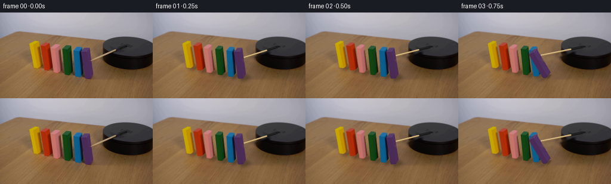
展开代码变化
--- 上一保存版本 +++ 本次保存版本 @@ -47,7 +47,9 @@ fill=np.uint8(np.clip(wood.astype(float)-wood_l+low_l,0,255)) # Poisson blending makes the restored table continuous at the silhouette edge. x0,y0,bw,bh=cv2.boundingRect(mask) -base=cv2.seamlessClone(fill,original,mask,(x0+bw//2,y0+bh//2),cv2.NORMAL_CLONE) +safe_dest=original.copy() +safe_dest[mask>0]=low[mask>0] +base=cv2.seamlessClone(fill,safe_dest,mask,(x0+bw//2,y0+bh//2),cv2.NORMAL_CLONE) # Erase the original moving spindle and stick on the platform and on the tabletop. armmask=np.zeros((H,W),np.uint8) cv2.line(armmask,(151,81),(196,63),255,4,cv2.LINE_AA)
可观测工具轨迹
实际执行的命令与返回图片。
命令 1exit 0
/bin/bash -lc 'ls -la && cat prompt.txt && cat GENERATION_RULES.md'
命令 2exit 0
/bin/bash -lc "cat artifact_io.py && python - <<'PY'
from PIL import Image
im=Image.open('first_frame.png');print(im.size);im.resize((1024,576)).save('.tmp/large.png')
PY"命令 3exit 0
/bin/bash -lc "python - <<'PY' import importlib.util for k in ['cv2','numpy','scipy','PIL']:print(k, bool(importlib.util.find_spec(k))) PY"
命令 4exit 0
/bin/bash -lc "python - <<'PY'
from PIL import Image, ImageDraw
im=Image.open('first_frame.png').resize((1024,576),Image.Resampling.NEAREST);d=ImageDraw.Draw(im)
for x in range(40,161,5):
d.line((x*4,160,x*4,456),fill=(255,255,255),width=1);d.text((x*4+1,160),str(x),fill=(0,0,0))
for y in range(45,116,5):
d.line((160,y*4,660,y*4),fill=(255,255,255),width=1);d.text((160,y*4+1),str(y),fill=(0,0,0))
im.save('.tmp/grid.png')
PY"命令 5exit 0
/bin/bash -lc "python - <<'PY'
from PIL import Image
im=Image.open('first_frame.png');im.crop((43,43,160,116)).resize((936,584)).save('.tmp/crop.png')
PY"命令 6exit 0
/bin/bash -lc "cat > generate.py <<'PY'
from pathlib import Path
import math
import cv2
import numpy as np
from PIL import Image, ImageDraw
import artifact_io
ROOT=Path(__file__).resolve().parent
S=4
W,H=256,144
original=np.array(Image.open(ROOT/'first_frame.png').convert('RGB'))
# Each block's local axes are measured in the initial locked camera image.
# bottom front left, width, depth, height
blocks=[
((56.5,92.5),(7.7,.8),(5.8,-5.4),(-7.0,-40.1)),
((74.3,96.8),(8.0,.6),(5.8,-5.6),(-6.7,-41.8)),
((90.4,100.4),(8.0,.6),(5.0,-5.4),(-5.3,-41.7)),
((109.0,104.4),(7.8,.9),(5.0,-6.0),(-4.5,-42.8)),
((125.9,107.3),(8.2,.8),(5.2,-7.0),(-2.7,-43.1)),
((142.5,111.0),(8.2,-.3),(5.5,-6.9),(-6.2,-45.1)),
]
blocks=[tuple(np.array(v,float) for v in b) for b in blocks]
def poly_mask(points,size=(W*S,H*S)):
a=np.zeros((size[1],size[0]),np.uint8)
cv2.fillPoly(a,[np.rint(np.array(points)*S).astype(np.int32)],255,lineType=cv2.LINE_AA)
return a
# Recover the tabletop under the six initially upright blocks from its visible wood.
mask=np.zeros((H,W),np.uint8)
for p,u,v,z in blocks:
q=np.array([p,p+u,p+u+v,p+u+v+z,p+u+z,p+z,p+v+z])
cv2.fillConvexPoly(mask,np.rint(cv2.convexHull(q.astype(np.float32))).astype(np.int32),255)
mask=cv2.dilate(mask,np.ones((5,5),np.uint8))
# Cover the cast shadows along the base of the row.
cv2.fillPoly(mask,[np.array([(53,89),(67,86),(159,103),(165,116),(126,118),(54,99)],np.int32)],255)
low=cv2.inpaint(original,mask,5,cv2.INPAINT_TELEA)
yy,xx=np.mgrid[:H,:W].astype(np.float32)
# A real portion of the unoccluded wood supplies faint diagonal grain inside the holes.
sx=0.48*xx-0.32*yy+49
sy=0.40*yy+96
wood=cv2.remap(original,sx,sy,cv2.INTER_CUBIC,borderMode=cv2.BORDER_REFLECT_101)
# Retain broad local illumination while using texture from the table itself.
wood_l=cv2.GaussianBlur(wood.astype(np.float32),(0,0),3)
low_l=cv2.GaussianBlur(low.astype(np.float32),(0,0),7)
fill=np.clip(.47*wood.astype(float)+.53*(wood.astype(float)-wood_l+low_l),0,255)
# Blend at the boundary, but fully remove original colored pixels.
alpha=cv2.GaussianBlur(mask.astype(float)/255,(0,0),.6)
alpha=np.maximum(alpha,mask.astype(float)/255)
base=original.astype(float)*(1-alpha[:,:,None])+fill*alpha[:,:,None]
base=np.uint8(np.clip(base,0,255))
# Erase the original moving spindle and stick on the platform and on the tabletop.
armmask=np.zeros((H,W),np.uint8)
cv2.line(armmask,(151,81),(196,63),255,4,cv2.LINE_AA)
cv2.line(armmask,(194,65),(211,57),255,6,cv2.LINE_AA)
cv2.line(armmask,(208,57),(215,55),255,5,cv2.LINE_AA)
base=cv2.inpaint(base,armmask,3,cv2.INPAINT_TELEA)
# Composite on the original camera image at fourfold subpixel precision.
base_hi=cv2.resize(base,(W*S,H*S),interpolation=cv2.INTER_CUBIC).astype(np.float32)
orig_hi=cv2.resize(original,(W*S,H*S),interpolation=cv2.INTER_CUBIC).astype(np.float32)
faces=[]
for p,u,v,z in blocks:
fs={
'front':np.array([p,p+u,p+u+z,p+z]),
'right':np.array([p+u,p+u+v,p+u+v+z,p+u+z]),
'top':np.array([p+z,p+u+z,p+u+v+z,p+v+z]),
'bottom':np.array([p,p+u,p+u+v,p+v]),
}
means={}
for k in ('front','right','top'):
m=poly_mask(fs[k]);m=cv2.erode(m,np.ones((4,4),np.uint8))
means[k]=np.mean(orig_hi[m>128],axis=0)
fs['means']=means
faces.append(fs)
def draw_face(canvas,src,dst,shift=None,flat=None):
dst=np.array(dst,np.float32)
# Reject hidden planar faces.
area=np.cross(dst[1]-dst[0],dst[2]-dst[1])
if area >= -0.12:return
matrix=cv2.getPerspectiveTransform(np.array(src,np.float32)*S,dst*S)
texture=cv2.warpPerspective(orig_hi,matrix,(W*S,H*S),flags=cv2.INTER_LINEAR,borderMode=cv2.BORDER_REPLICATE)
if flat is not None:
texture[:]=flat
elif shift is not None:
texture+=shift
alpha=poly_mask(dst).astype(np.float32)/255
# Slightly soften painted wooden edges to match the input's photographic focus.
alpha=cv2.GaussianBlur(alpha,(0,0),.75)
canvas[:]=canvas*(1-alpha[:,:,None])+np.clip(texture,0,255)*alpha[:,:,None]
def angle_at(t,i):
# A motor presses the violet end block, initiating the right-to-left cascade.
start=.43+(5-i)*.17
settled=[math.pi/2,1.397,1.323,1.265,1.225,1.195][i]
q=(t-start)/.67
if q<=0:return 0.
if q>=1.20:return settled
if q<1:
# Gravitational acceleration grows during the first part of the fall.
a=settled*(q*q*(2.0-q))
return a
# Small collision recoil, then a stable overlapping pile.
return settled+.025*math.sin((q-1)*math.pi/0.2)*math.exp(-15*(q-1))
def arm(canvas,t):
center=np.array([210.5,57.3])
theta=math.radians(139+22*t)
direction=np.array([math.cos(theta),.445*math.sin(theta)])
tip=center+79*direction
stickstart=center+24*direction
# Small soft shadow on the table and black motor housing.
shade=np.zeros((H*S,W*S),np.uint8)
cv2.line(shade,tuple(np.rint((stickstart+[1,2])*S).astype(int)),tuple(np.rint((tip+[1,2])*S).astype(int)),255,2*S,cv2.LINE_AA)
shade=cv2.GaussianBlur(shade,(0,0),1.8*S).astype(float)/255*.12
canvas*=1-shade[:,:,None]
def line(a,b,color,width):
cv2.line(canvas,tuple(np.rint(a*S).astype(int)),tuple(np.rint(b*S).astype(int)),color,max(1,round(width*S)),cv2.LINE_AA)
# The black clamp revolves with the wooden arm.
line(center+3*direction,center+24*direction,(26,26,27),3.8)
line(center+5*direction+[-.1,-.65],center+22*direction+[-.1,-.65],(37,37,38),1.0)
cv2.ellipse(canvas,tuple(np.rint(center*S).astype(int)),(int(3.4*S),int(1.65*S)),0,0,360,(29,29,30),-1,cv2.LINE_AA)
line(stickstart,tip,(158,124,75),2.05)
line(stickstart+[-.15,-.38],tip+[-.15,-.38],(213,183,126),1.30)
line(stickstart+[0,-.68],tip+[0,-.68],(222,196,146),.48)
def render(t):
canvas=base_hi.copy()
angles=[angle_at(t,i) for i in range(6)]
shadow=np.zeros((H*S,W*S),np.float32)
for i,(p,u,v,z) in enumerate(blocks):
a=angles[i];r=np.linalg.norm(z)/np.linalg.norm(u)
# Project the light ray to the wooden table.
zshadow=np.array([10.0,5.0])/r
us=u*math.cos(a)+zshadow*math.sin(a)
zs=-u*r*math.sin(a)+zshadow*r*math.cos(a)
pts=np.array([p,p+us,p+us+v,p+us+v+zs,p+v+zs,p+zs])
m=poly_mask(cv2.convexHull(pts.astype(np.float32)).reshape(-1,2)).astype(np.float32)/255
m=cv2.GaussianBlur(m,(0,0),(1.45+1.2*math.cos(a))*S)
shadow=np.maximum(shadow,m*.31)
# Tight contact shade keeps each fallen block visibly on the surface.
ground=np.array([p,p+us,p+us+v,p+v])
m2=poly_mask(ground).astype(float)/255
shadow=np.maximum(shadow,cv2.GaussianBlur(m2,(0,0),.8*S)*.34)
canvas*=1-shadow[:,:,None]
arm(canvas,t)
for i,(p,u,v,z) in enumerate(blocks):
a=angles[i];r=np.linalg.norm(z)/np.linalg.norm(u)
zz=z/r
ur=u*math.cos(a)+zz*math.sin(a)
zr=-u*r*math.sin(a)+z*math.cos(a)
dst={
'front':[p,p+ur,p+ur+zr,p+zr],
'right':[p+ur,p+ur+v,p+ur+v+zr,p+ur+zr],
'top':[p+zr,p+ur+zr,p+ur+v+zr,p+v+zr],
'bottom':[p+v,p+ur+v,p+ur,p],
}
f=faces[i]
shift=(f['means']['top']-f['means']['right'])*math.sin(a)*.86
draw_face(canvas,f['top'],dst['top'],shift=-math.sin(a)*7)
draw_face(canvas,f['bottom'],dst['bottom'],flat=f['means']['front']*.7)
draw_face(canvas,f['right'],dst['right'],shift=shift)
draw_face(canvas,f['front'],dst['front'],shift=math.sin(a)*np.array([2,1,0]))
return cv2.resize(np.uint8(np.clip(canvas,0,255)),(W,H),interpolation=cv2.INTER_AREA)
if __name__=='__main__':
frames=[original]
for k in range(1,20):frames.append(render(k/4))
frames=np.stack(frames).astype(np.uint8)
artifact_io.save(frames,ROOT)
Image.fromarray(base).save(ROOT/'.tmp/background.png')
Image.fromarray(render(0)).save(ROOT/'.tmp/rebuild.png')
PY
python generate.py"命令 7exit 0
/bin/bash -lc "python - <<'PY'
from PIL import Image
for p in ['.tmp/rebuild.png','frames/08.png','frames/03.png','first_frame.png']:
im=Image.open(p); im.resize((1024,576)).save('.tmp/'+p.split('/')[-1].replace('.png','_large.png'))
PY"命令 8exit 0
/bin/bash -lc "cp generate.py .tmp/generate_v1.py
python - <<'PY'
p='generate.py'
s=open(p).read()
a=s.index('sx=0.48*xx')
b=s.index('# Erase the original',a)
s=s[:a]+'''sy=125 + 10*np.sin((yy-83)/16)
sx=xx-.80*(sy-yy)
wood=cv2.remap(original,sx,sy,cv2.INTER_CUBIC,borderMode=cv2.BORDER_REFLECT_101)
# Match low-frequency lighting to the neighboring exposed table while retaining
# its actual grain along the correct perspective direction.
wood_l=cv2.GaussianBlur(wood.astype(np.float32),(0,0),3)
low_l=cv2.GaussianBlur(low.astype(np.float32),(0,0),7)
fill=np.uint8(np.clip(wood.astype(float)-wood_l+low_l,0,255))
# Poisson blending makes the restored table continuous at the silhouette edge.
x0,y0,bw,bh=cv2.boundingRect(mask)
base=cv2.seamlessClone(fill,original,mask,(x0+bw//2,y0+bh//2),cv2.NORMAL_CLONE)
''' +s[b:]
s=s.replace(\"cv2.line(armmask,(194,65),(211,57),255,6,cv2.LINE_AA)\",\"cv2.line(armmask,(179,71),(211,57),255,7,cv2.LINE_AA)\")
s=s.replace(\"orig_hi=cv2.resize(original,(W*S,H*S),interpolation=cv2.INTER_CUBIC).astype(np.float32)\",\"\"\"clean_texture=original.copy()
moving_artifact=np.zeros((H,W),np.uint8)
cv2.line(moving_artifact,(150,81),(155,79),255,3,cv2.LINE_AA)
clean_texture=cv2.inpaint(clean_texture,moving_artifact,3,cv2.INPAINT_TELEA)
orig_hi=cv2.resize(clean_texture,(W*S,H*S),interpolation=cv2.INTER_CUBIC).astype(np.float32)\"\"\")
s=s.replace(\"area=np.cross(dst[1]-dst[0],dst[2]-dst[1])\",\"a1=dst[1]-dst[0];a2=dst[2]-dst[1]\\n area=a1[0]*a2[1]-a1[1]*a2[0]\")
open(p,'w').write(s)
PY
python generate.py"命令 9exit 0
/bin/bash -lc "python - <<'PY'
p='generate.py';s=open(p).read();s=s.replace('base=cv2.seamlessClone(fill,original,mask,(x0+bw//2,y0+bh//2),cv2.NORMAL_CLONE)', '''safe_dest=original.copy()
safe_dest[mask>0]=low[mask>0]
base=cv2.seamlessClone(fill,safe_dest,mask,(x0+bw//2,y0+bh//2),cv2.NORMAL_CLONE)''');open(p,'w').write(s)
PY
python generate.py"命令 10exit 0
/bin/bash -lc "python - <<'PY'
from PIL import Image
Image.open('frames/08.png').resize((1024,576)).save('.tmp/new8.png')
PY"命令 11exit 0
/bin/bash -lc "python - <<'PY'
import numpy as np
from PIL import Image
p=np.load('pixels.npz')['pixels']
im=np.array(Image.open('first_frame.png').convert('RGB'))
f=(im[:,:,0].astype('uint32')<<16)|(im[:,:,1].astype('uint32')<<8)|im[:,:,2].astype('uint32')
assert p.shape==(144,256,20)
assert np.array_equal(p[:,:,0],f)
print('Verified: 20 RGB frames, 256Ã144, initial frame exact.')
PY
command -v ffmpeg || true"视觉工具实际返回图片 1

视觉工具实际返回图片 2
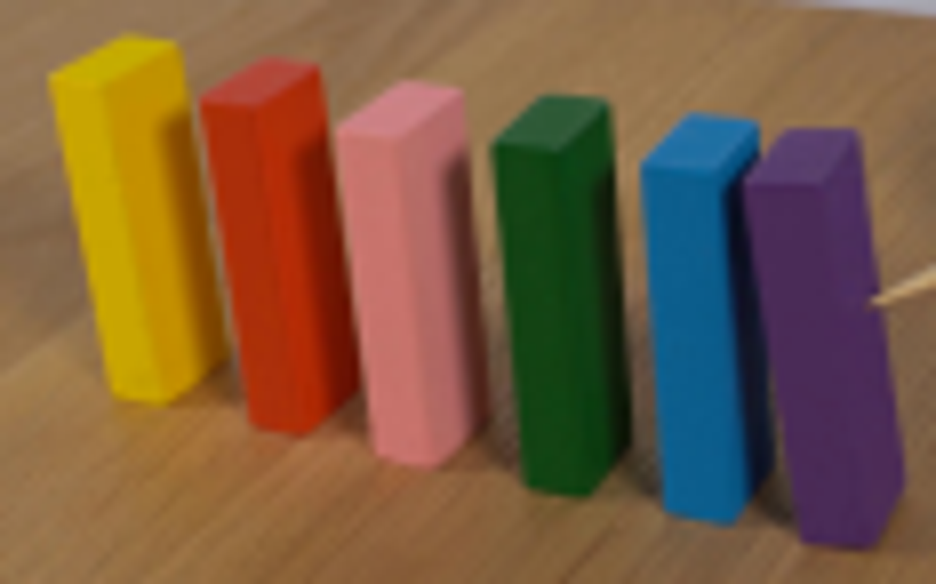
视觉工具实际返回图片 3
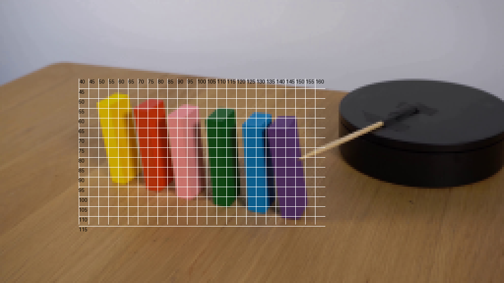
视觉工具实际返回图片 4
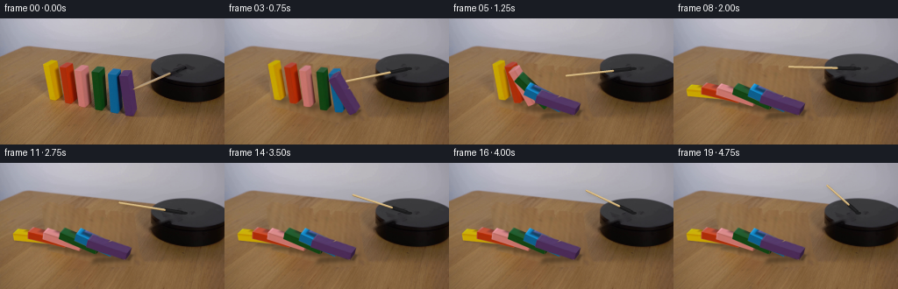
视觉工具实际返回图片 5
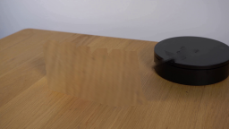
视觉工具实际返回图片 6
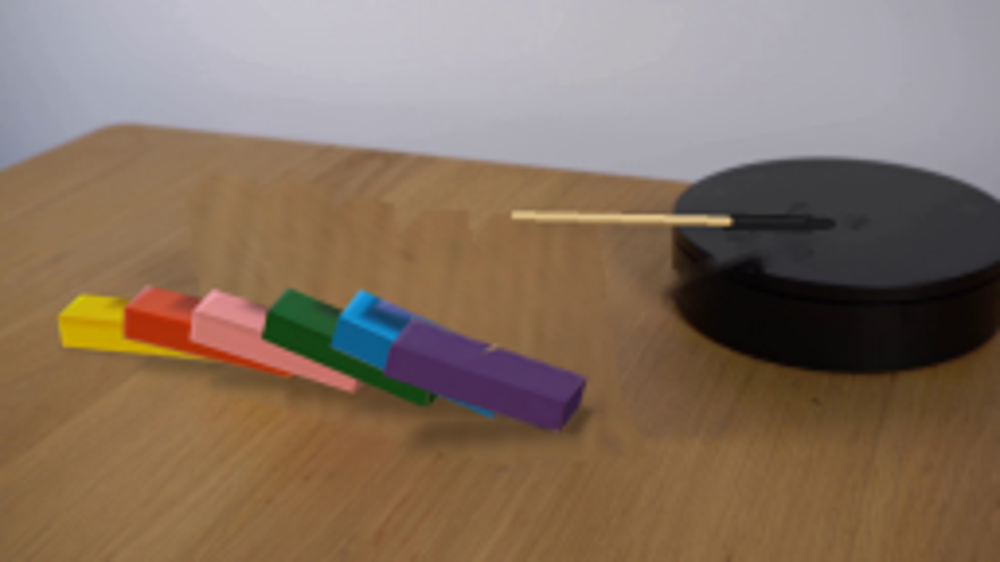
视觉工具实际返回图片 7
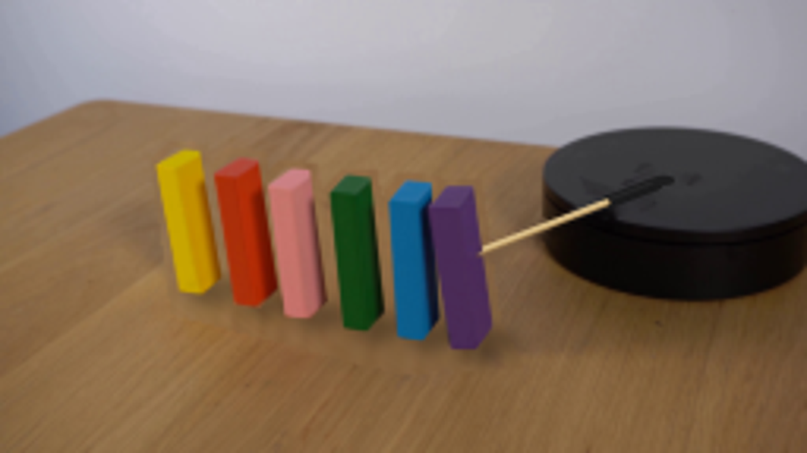
视觉工具实际返回图片 8
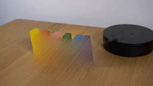
视觉工具实际返回图片 9
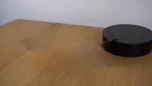
视觉工具实际返回图片 10
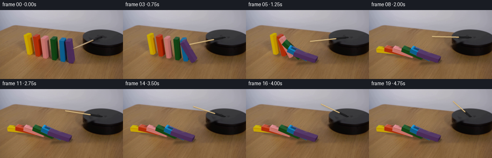
视觉工具实际返回图片 11
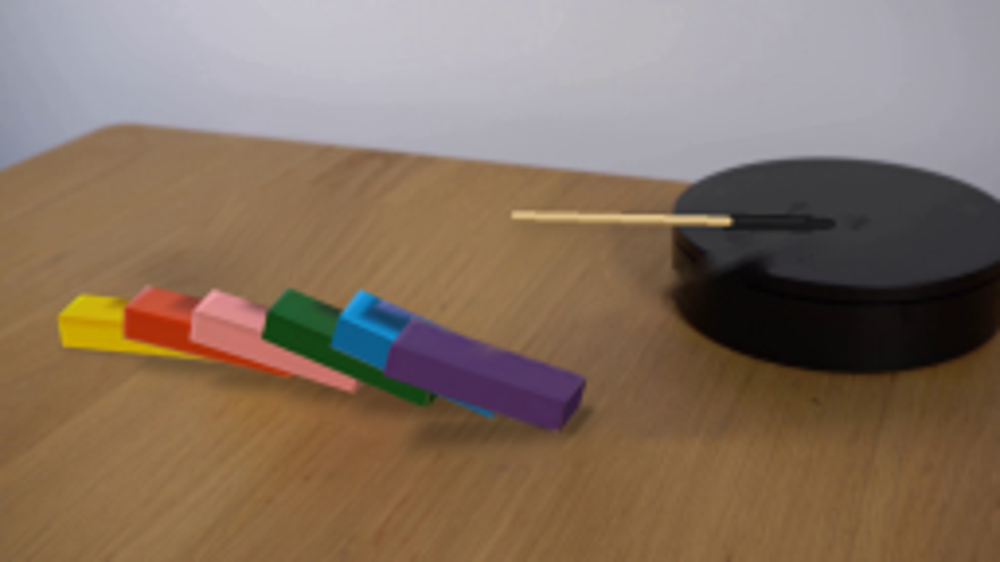
保存候选 3 份；完成命令 11 次；可验证图片返回 11 张。原始 API 响应与完整日志保留在本地。